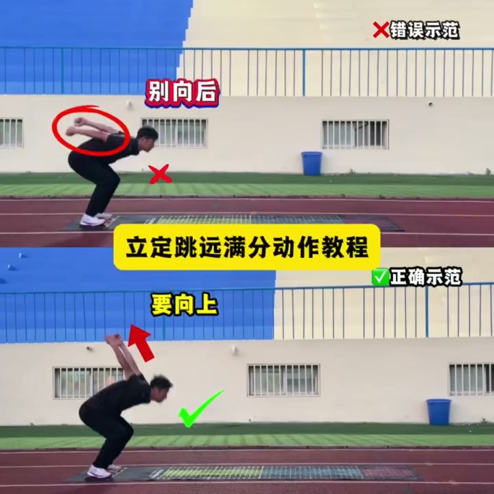
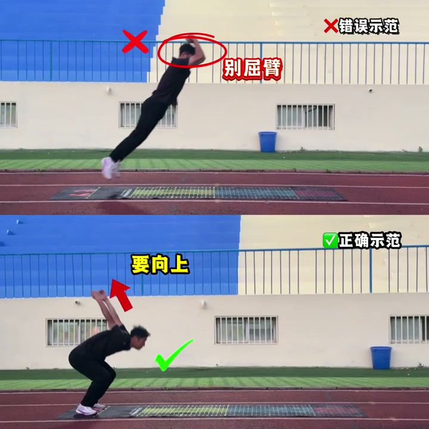
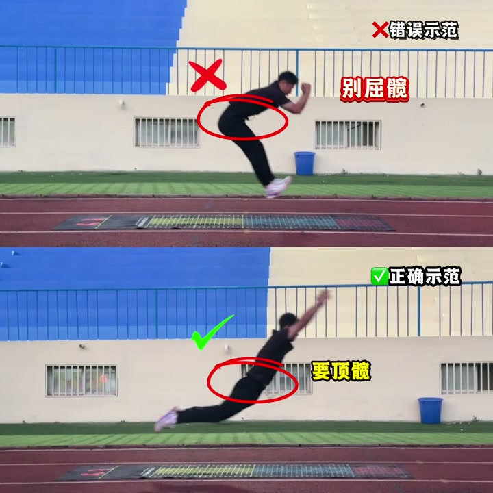

内容要点
短片以错误示范和正确示范并列，纠正立定跳远起跳时的摆臂、上肢方向和髋部动作。原始语音转录中“屈髋”“顶髋”等词存在识别误差，以下以画面标注为准整理；它展示的是动作提示，不代替按个人能力进行的训练指导。
预摆：手臂不要只向后甩
第一组画面对比预摆阶段。错误示范的双臂向后，画面以红圈和“别向后”标记；正确示范则让手臂向上摆，以绿勾和“要向上”提示。这里强调的是摆臂方向应服务于起跳的向上、向前发力，而不是在身后停留。

起跳：上肢保持向上延伸
第二组定格在离地起跳瞬间。上方错误示范的手臂屈曲并被红圈标出，下方正确示范延续向上的摆臂路线。视频没有提供关节角度或训练负荷，因此只能把它理解为“起跳时避免过早收臂”的视觉提示，而非要求把肘关节完全锁死。

腾空：避免屈髋，强调顶髋
最后一组把注意力转到髋部：画面上方标注“别屈髋”，下方标注“要顶髋”。可理解为起跳后不要过早把躯干和大腿折叠在一起，而要完成髋部伸展，让身体向前上方延伸。落地仍需屈膝缓冲、量力练习；视频没有展示完整落地技术，不能由此推导落地动作。

动作提示
预摆向上、起跳避免过早收臂、腾空完成髋部伸展；如有膝髋踝伤病或落地疼痛，应停止练习并咨询专业人士。